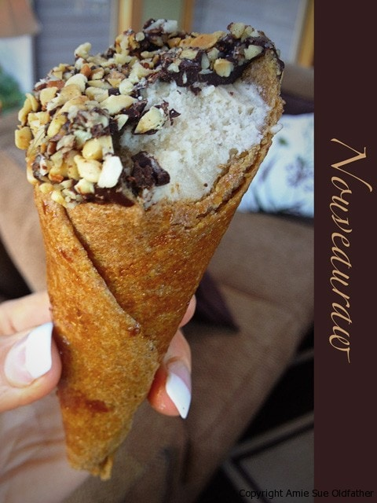

Ice Cream Recipe Template | Raw
 BRAIN FREEZE!!! Have you experienced what people refer to as “brain freeze”? When something cold touches the roof of your mouth, the sudden temperature change of the tissue stimulates nerves to cause rapid dilation and swelling of blood vessels. This reaction is an attempt to direct blood to the area and warm it back up.
BRAIN FREEZE!!! Have you experienced what people refer to as “brain freeze”? When something cold touches the roof of your mouth, the sudden temperature change of the tissue stimulates nerves to cause rapid dilation and swelling of blood vessels. This reaction is an attempt to direct blood to the area and warm it back up.
Brain freeze typically hits about ten seconds after chilling the roof of your mouth and lasts about half a minute. The best way to avoid brain freeze is to eat or drink cold items slowly.
But I understand when you are consuming treats like amazing raw ice creams, how can one control themselves? :) I found that if I pinch the bridge of my nose (right between my eyes) that it causes the sensation to stop. Do you have any tricks that help you, or do you practice enough self-control to eat your ice cream slowly?
All of the information that I am providing below is based on creating a raw or high-raw, dairy-free ice cream. These are not the traditional ways, nor am I using traditional ingredients, so please keep that in mind, raw ingredients work differently than cooked and processed ingredients.
There are hundreds of flavor combinations and many different ways to make ice cream. I suspect that this posting will grow in time as I learn and experience more in the kitchen. But for now, I wanted to share with you what I know. I hope that you find this helpful and refer back to it as needed.
Basic Components of Ice Cream
Fats ~
- Purpose: Fats add richness, stabilizes the base mix, improves density and the smoothness of texture, and generally increases flavor. One of the hardest parts of making a dairy-free, raw ice cream is getting a rich enough base to create a firm foundation. For a good start, we need healthy fat so that our base will be rich and creamy. In my experience, many dairy-free “milks” are thin, and if you don’t have enough fat in ice cream, it will become hard and icy.
- Types of fats: Soaked cashews, avocado, Young Thai Coconut meat/flesh, canned full-fat coconut milk
- Cashews always require soaking for at least two hours so that they soften and can create a creamy mouth-feel. They will swell during the soaking process, so be sure to soak in plenty of water. All measurements listed in my ice cream ingredients are before soaking. Do not use roasted and salted cashews. They will throw off the flavor of the ice cream, plus it is not a raw product. Cashews are neutral in taste, so it makes for a wonderful base for any creation. For a base, I tend to start with 2 cups of cashews (before soaking).
- Walnuts and pecans can be used and offer a great flavor but aren’t as neutral in taste. Be sure to soak raw walnuts for eight hours. Drain and rinse thoroughly to remove the bitterness and tannins.
- Avocados will impart some flavor (depends on the other ingredients added), and it will affect the color. Always use ripe avocados. If they are firm and unripe, they will impart a bitterness. If you are not a fan of avocados, you can easily mask their taste by adding sweeteners and raw cacao. Avocados will give an excellent base for the ice cream. I tend to start with two large avocados.
- Young Thai Coconuts make for a wonderful base. You will use the meat and/or the flesh. These coconuts can be challenging to find (depending on where you live), expensive, and a bit of a gamble as to how many you will need. Please read this post for more information regarding this. Even if you don’t love coconut, the flavor is pretty subtle, especially if you mix it with fruit, chocolate, etc. For a base, I tend to start with 2 cups of meat/flesh.
- Canned full-fat coconut milk is another option that works great but isn’t raw. So far, the leading brand that I use and have been happy with is Coconut Milk. It comes in a BPA-free can, and it is organic and doesn’t contain any fillers. For a base, I tend to use two cans, and always with the full-fat version. If you are ok with using canned coconut milk, always keep two cans in the fridge so that you can create an ice cream on a whim.
- Purpose: Adds sweetness but also improves texture and body. Sweeteners lower the freezing point of the mix, ensuring that the ice cream does not freeze rock-solid. In other words, reducing the sweeteners (for health or dietary reasons, for example) does not only affect sweetness but could also jeopardize the “build” and stability of the ice cream.
- Types of sweeteners:
- Liquid Stevia: The bottle says to use 5-8 drops for 8 ounces of liquid. I don’t recommend using stevia all by itself as the only sweetener; it will affect the mouth-texture of the ice cream making it less creamy. Stevia works best when used in combination with another sweetener.
- Raw Honey: I tend to use 1/2 – 2/3 cup for a recipe.
- Maple syrup: Not raw, so look for grade B maple syrup to ensure maximum mineralization. I tend to use 1/2 – 2/3 cup for a recipe.
- Coconut Nectar: Great replacement for agave if you can’t locate a raw form of agave. I tend to use 1/2 – 2/3 cup for a recipe.
- Dates: They are a whole food option. I prefer soft dates such as Medjool. Harder ones may require soaking before use. Dates can affect your recipe visually, so keep this in mind.
- Yacon: Has a molasses kind of flavor and is raw, low-calorie, low glycemic, and is a pre-biotic (helps nurture intestinal bacteria).
 Tips:
Tips:
- Make sure any sweetener you add is in syrup/liquid form, or it’ll cause crystals to form.
- When converting a cooked ice cream recipe to raw, honey can be used instead of sugar pretty much in a 1:1 ratio.
Emulsifiers:
- Purpose: Lecithin is essential in recipes involving blending fats with other liquids; it is an emulsifier (binding property). It comes in several forms.
- Types of lecithin:
- Lecithin Granular is soy-based and must be ground into a powder first. Always look for non-GMO.
- I prefer to use sunflower powder or liquid lecithin.
- Tips:
- I tend to use 1 Tbsp of lecithin per batch of ice cream.
- Use the same measurement, whether in granular, powder, or liquid form.
Ice crystals ~
- Ice crystals are formed when the water content in the base starts to freeze; they put the “ice” in “ice cream,” giving solidity and body. The size of the ice crystals largely determines how fine, or grainy, the ice cream eventually turns out.
- The main objective is to keep the size of the ice crystals as small as possible. Churning the ice cream as it freezes helps this process.
- Sugar forms a physical barrier to crystallization (that’s why low-sugar ice cream recipes often turn out with such poor results).
- Faster freezing is another way to cut down on the ice crystal size, but since we can’t always turn our freezers down just for our ice cream, the answer is to freeze the ice cream in shallower containers. Perhaps a baking pan or ice-cube trays.
Air ~
- The tiny air cells whipped into the base mix are primarily responsible for the general consistency of ice cream and significantly affect texture and volume.
- The quicker an ice cream machine whips in the air, the more air will be in the ice cream, making it creamier. Home ice cream machines can’t produce as much air as commercial ones, so this part is hard to replicate.
- When you are ready to transfer the ice cream from the ice cream makers container to a freezer-safe container, Do NOT pack the ice cream down, or you will eliminate the fluffiness that helps make for a smoother texture.
 Banana Ice Cream base ~
Banana Ice Cream base ~
- Use ripe bananas because they are at their peak of ripeness and sweeter. Using them in their sweetest state means less added sweetener.
- Bananas must be frozen first before making your banana-based ice cream. Peel and place on a cookie sheet, either whole or sliced. I freeze mine whole and break them into chunks when adding to my food processor or blender.
- They should be frozen for at least 24 hours before use.
- Banana ice cream can be eaten as one ingredient “ice cream,” or you can add other ingredients to it. Be creative!
Last-minute tips:
- Always start with all the ingredients chilled. Chilled ingredients help the ice cream to freeze quicker, which makes for less time for ice crystals to form.
- When adding fresh fruits, intensify the fruit flavor by dividing the quantity and blend 1/2 in the base and then dice up the remainder and stir into the ice cream after it has gone through the ice cream machine process.
- When adding sweeteners, remember that once the ice cream is frozen, it will taste less sweet than when it was in the liquid batter form.
- Always taste test as you go along! When it comes to adding spices or extracts, start with less and add more as needed.
Freezing Techniques:
Ice cream machine:
- The bowls of most ice cream makers take at least 24 hours to freeze. If the bowl isn’t completely frozen, it won’t get the ice cream thoroughly cold. Get in the habit of storing the bowl of your ice cream maker in the freezer, wrapped tightly in a plastic bag, so it doesn’t absorb weird freezer odors.
- Don’t overfill your ice cream maker bowl. Fill it 3/4 full, and it will yield the best results. The ice cream batter expands as it freezes due to the air being whipped into it, and needs room to accomplish this.
- Add mix-ins, such as chocolate chips, nuts, and fruit pieces, during the last minute of churning. The ice cream should already be done. You want to distribute the mix-ins evenly.
- Shallow, flat containers are best for freezing and storing ice cream as it promotes a smooth consistency when freezing.
- To prevent large ice crystals from forming, give it another layer of protection by covering the container with a layer of plastic wrap or wax paper before placing the lid on the container.
- Freeze the newly-made ice cream for about four hours before serving. This process is also known as “ripening.”
- Homemade ice creams keep well for up to a week. After that, they begin to lose their flavor and creamy texture.
- Remove the frozen mixture from the freezer for five to ten minutes (or longer) before scooping and serving.
Making Ice Cream Without A Machine:
- Prepare your ice cream mixture, pour it into a shallow container, then chill it over an ice bath. An ice bath is a larger container (plastic, stainless steel, etc.) lined with ice cubes on the bottom and sides that will fit your ice cream container when placed inside of it.
- After thirty minutes, check on the ice cream. As it starts to freeze near the edges, remove it from the freezer and stir it vigorously with a spatula or whisk. Return to the freezer.
- Continue to check the mixture every thirty minutes, vigorously stirring as it’s freezing. You can use a hand-held mixer or stick-blender for best results if you have one.
- This process can take two to three hours.
- Remove the frozen mixture from the freezer for five to ten minutes (or longer) before scooping and serving.

© AmieSue.com